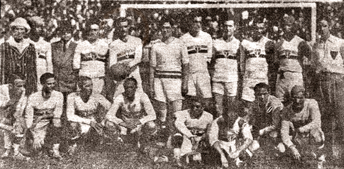

1930s

Born twice
São Paulo FC was founded on 25 January 1930, built from the football section of CA Paulistano and the players of AA das Palmeiras. It won the Paulista title in 1931, but the club was broke by 1935 and was folded into Clube de Regatas Tietê. Members refused to let it die. They refounded the club on 16 December 1935.
Analysis: The club's founding myth is about members saving it from bad finances. That is worth remembering today.